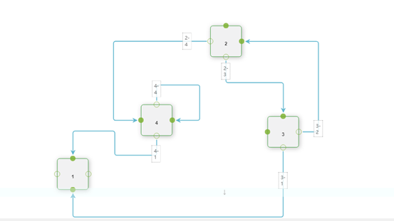

在系统开发中经常需要展示一些流程，这时候需要用到流程图组件，但是在Echarts这些开源的可视化软件中居然没有流程图的支持。这时候我们的解决方案只能是用div和箭头图片自己实现一些简单的连接，如果流程稍微复杂一点，考虑兼顾功能和美观就需要投入大量的人力和精力进行一些造轮子的动作。
jsplumb的出现一定程度上解决了我们的烦恼。
技术介绍
jsplumb是一款开源的javascript类库，基于SVG提供页面元素的连接。jsplumb提供了两个分支：
- Toolkit Edition商用版，基于社区版本进行封装提供更丰富的API支持
- Community Edition社区版，基于MIT和GPL2协议进行开源，提供基础的API功能
jsplumb的核心思想是对于页面元素的连接，在这个思想上对于连接进行了抽象，从而形成了jsplumb的几个基本要素：
Anchor – 锚
锚点主要用来定位一个端点的位置，锚点是一个逻辑上而非实体的概念，用户不可以直接创建，而是通过内部的机制生成
Endpoint – 端点
作为每一个连接的终点而存在，可以通过编程来显式的创建
Connector – 连接器
连接器作为连接的抽象，提供了两个元素之间进行连接的方式
Overlay – 镀层
jsplumb通过镀层的方式给为连接器进行用户友好的展示，如通过label的方式
Group – 分组
通过分组可以将一组元素作为一个整体，从而进行整体的拖拽和收缩等
一般来说两个端点，一个连接器，0到多个镀层一起工作共同组成了一次连接。每一个端点都有一个关联的锚点。
技术攻关
在熟悉了jsplumb主要的概念后，可以通过官方API了解一些主要功能。同时可以通过github 下载官方demo进行学习。通过观察，我们发现官方demo中的flowchart比较符合我们的需求，于是我们下载flowchart的demo源码进行研究改造。原始的demo效果图如下：

下面列出几个主要攻关点：
代码合并压缩
我们发现在demo中引入了一堆js和css，我们通过合并压缩最后形成了下面三个文件，
jsplumb-link.min.js
包含jsbezier.js，mottle.js，biltong.js和katavorio.js
jsplumb-lib.min.js
包含jsplumb核心类库相关的16个js文件，注意合并的顺序
jsPlumb_process.js
process组件相关的js，基于jsplumb的封装和客户化
去除镀层的文字
在connectionOverlay定义中发现同时对于箭头和文字都做了定义，直接将对于label的定义去除即可：
1
2
3
4
5
6
7
8
9
10
11
12
13
14
15
16
17
18
19
20
21
22
| ConnectionOverlays: [
[ "Arrow", {
location: 1,
visible:true,
width:11,
length:11,
id:"ARROW",
events:{
click:function() { alert("you clicked on the arrow overlay")}
}
} ]
]
|
禁止新增连接
在官方demo中可以通过鼠标拖动来新增一条连接，而API并没有对于连接的enable和disable的定义。Github有人回复说通过设置ConnectionsDetachable 属性来实现，实际效果并不能达到目的。
最终在初始化方法中通过两个方法的组合实现了这个功能：
1
| instance.unmakeEveryTarget().unmakeEverySource();
|
数据交互
数据导出功能在社区版不提供方法支持，不过我们可以通过一些简单的变通来实现；而导出功能和加载功能是相对应的，实现了数据的导出就可以基于现有的数据结构来实现数据的初始化加载。以下是导出方法的实现：
1
2
3
4
5
6
7
8
9
10
11
12
13
14
| function exportData(){
var blocks=[];
$(".w").each(function(idx, elem){
var elem=$(elem);
blocks.push({
BlockId:elem.attr('id'),
BlockContent:elem.text(),
BlockX:parseInt(elem.css("left"), 10),
BlockY:parseInt(elem.css("top"), 10)
});
});
var serliza=JSON.stringify(blocks);
$("#outputText").text(serliza);
}
|
主要思路是获取页面元素的id和名称以及他们和容器的相对位置，最终通过json的格式进行存储。至于元素之间的关系通过业务系统保存和维护。
相应的我们可以实现我们的导入方法：
1
2
3
4
5
6
7
8
9
10
11
12
13
14
15
16
17
18
19
20
21
22
23
24
| var loadJson = function(data){
var unpack=JSON.parse(data);
if(!unpack){
return false;
}
unpack.map(function(value, index, array) {
var _block = eval(value);
newNodeWithName(_block.BlockId,_block.BlockContent, _block.BlockX, _ block.BlockY);
});
return true;
}
var newNodeWithName = function(id, name, x, y){
var d = document.createElement("div");
d.className = "w";
d.id = id;
d.innerHTML = name.substring(0, 7) + "<div class=\"ep\"></div>";
d.style.left = x+ "px";
d.style.top = y+ "px";
instance.getContainer().appendChild(d);
initNode(d);
return d;
}
|
实现思路是通过解析json获取每一个元素的id和name并通过相对位置在容器中绘制出来。
自动对齐
通过页面拖动的元素不像传统的流程图工具提供自动对齐的功能，我们基于像素级别对元素对齐进行了基本的约束。
1
2
3
4
5
6
7
8
9
| def
X(e) = 元素e的起始横坐标
Y(e) = 元素e的起始纵坐标
W(e) = 元素e的宽度
H(e) = 元素e的高
if abs(Diff(X(a),X(b))) between (0, W(a)) set X(a) = X(b)
if abs(Diff(Y(a),Y(b))) between (0, H(a)) set Y(a) = Y(b)
|
实现代码：
1
2
3
4
5
6
7
8
9
10
11
12
13
14
15
16
17
18
19
20
21
22
23
24
25
26
27
| window.autoAlignment = function(){
var baseX = Number($(".w").eq(0).css("width").replace("px",""));
var baseY = Number($(".w").eq(0).css("height").replace("px",""));
var thatX=0, thatY=0, thisX = 0, thisY=0, deltaX = 0, deltaY = 0;
var index = 0;
var eleArray = $(".w");
for(var i =0 ; i < eleArray.length; i++){
thatX = Number($(eleArray[i]).css("left").replace("px",""));
thatY = Number($(eleArray[i]).css("top").replace("px",""));
for(var j =i+1; j < eleArray.length; j++){
thisX = Number($(eleArray[j]).css("left").replace("px",""));
thisY = Number($(eleArray[j]).css("top").replace("px",""));
deltaX = Math.abs(thisX - thatX);
deltaY = Math.abs(thisY - thatY);
if(deltaX < baseX && deltaX >0 && deltaY >=baseY){
$(eleArray[j]).css("left",thatX+"px");
}
if(deltaY < baseY && deltaY >0 && deltaX >=baseX){
$(eleArray[j]).css("top",thatY+"px");
}
}
}
instance.repaintEverything();
}
|
Zoom缩放
同样由于在社区版不提供zoom的接口，我们只能通过自己来实现zoom功能。
1
2
3
4
5
6
7
8
9
10
11
12
13
14
15
16
17
18
19
20
21
| window.setZoom = function (zoom, instance0, transformOrigin, el) {
transformOrigin = transformOrigin || [0.5, 0.5];
instance = instance || jsPlumb;
el = el || instance.getContainer();
var p = ["webkit", "moz", "ms", "o"],
s = "scale(" + zoom + ")",
oString = (transformOrigin[0] * 100) + "% " + (transformOrigin[1] * 100) + "%";
for (var i = 0; i < p.length; i++) {
el.style[p[i] + "Transform"] = s;
el.style[p[i] + "TransformOrigin"] = oString;
}
el.style["transform"] = s;
el.style["transformOrigin"] = oString;
instance.setZoom(zoom, true);
instance.repaintEverything();
};
|
实现思路通过监听事件来设置style属性实现滚动，最终调用重绘方法进行整体调整。需要注意的是监听事件应该绑定到容器的上一层，如下图的外层div部分，否则缩放的是整个页面起不到zoom流程图的初衷
1
2
3
4
| <div class="jtk-canvas canvas-wide process-canvas jtk-surface jtk-surface-nopan">
<div class="jtk-surface-canvas" style="overflow:visible !important;" id="canvas"></div>
</div>
|
总结反思
我们通过对于jsplumb的客户化开发，实现了部分商用版本独有的功能，从而使得基于社区版的应用可以满足复杂业务使用的需求。其中比较核心的是数据交互部分，我们在jsplumb已有概念的基础上将页面元素封装成带有位置信息的组件进行保存和加载，实现了前后端的连接。